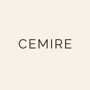

Dr. Gyulkits • Medicina Deportiva • Tratamiento del Dolor

Consultorio Cemire ofrece tratamientos de medicina regenerativa y estética médica con tecnología de vanguardia. Plasma Rico en Plaquetas, Fosfatidilcolina, Mesoterapia y más. Procedimientos realizados bajo evaluación profesional.
Procedimientos médicos realizados bajo evaluación profesional personalizada. Tecnología regenerativa para el dolor, la movilidad y la estética.
Infiltración intraarticular de PRP para molestias en rodilla, hombro, cervical y lumbar. Medicina regenerativa para recuperar tu movilidad y calidad de vida.
Tratamiento con Plasma Rico en Plaquetas para caída de cabello, debilitamiento y cabello quebradizo. Estimulación capilar con resultados comprobados.
Reducción de tejido adiposo localizado mediante microinyecciones estéticas médicas. Evaluación personalizada previa. Turnos disponibles.
Tratamiento combinado de Plasma Rico en Plaquetas y Mesoterapia para arrugas faciales. Tres zonas a elección: cara, cuello y escote.
Aplicación de Endopeel en zona de glúteos para tensar y mejorar la firmeza. Microinyecciones estéticas médicas con evaluación personalizada.
Toda intervención comienza con una evaluación profesional personalizada. El Dr. Gyulkits analiza tu caso y determina el tratamiento adecuado para vos.
Cada procedimiento en Consultorio Cemire es realizado bajo evaluación médica profesional. No somos un centro estético — somos un consultorio médico especializado.
Escribinos por WhatsApp e Instagram. Coordinamos el día y horario que mejor te quede. Atención personalizada en cada consulta.
11 2880-1474
@consultorio.cemire